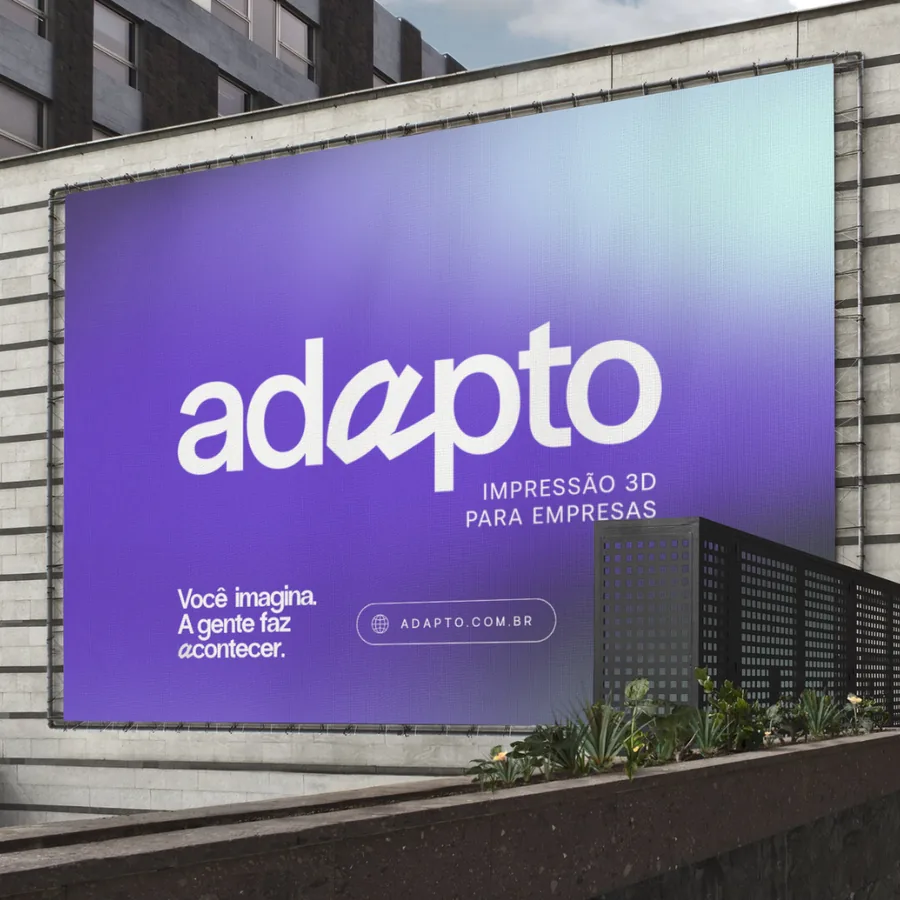
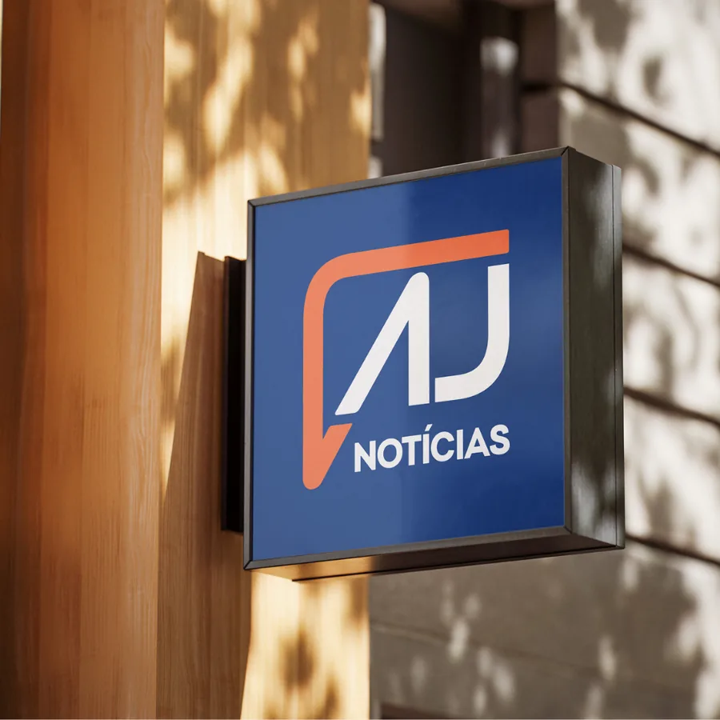
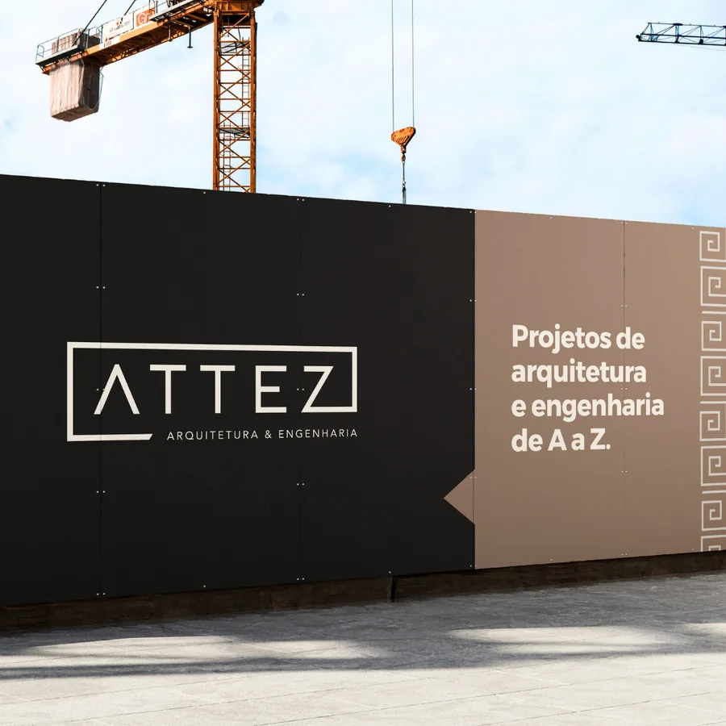
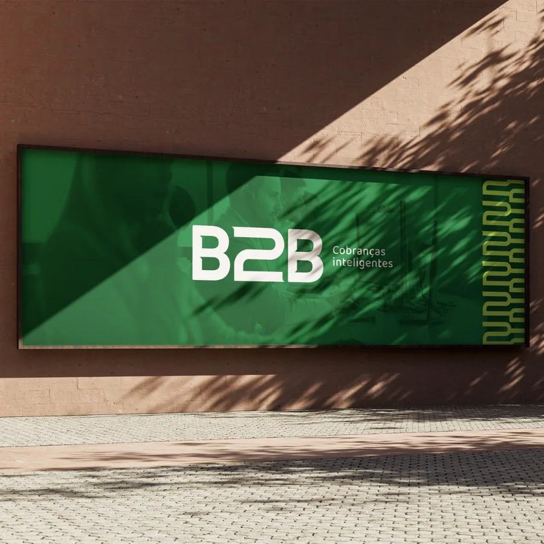
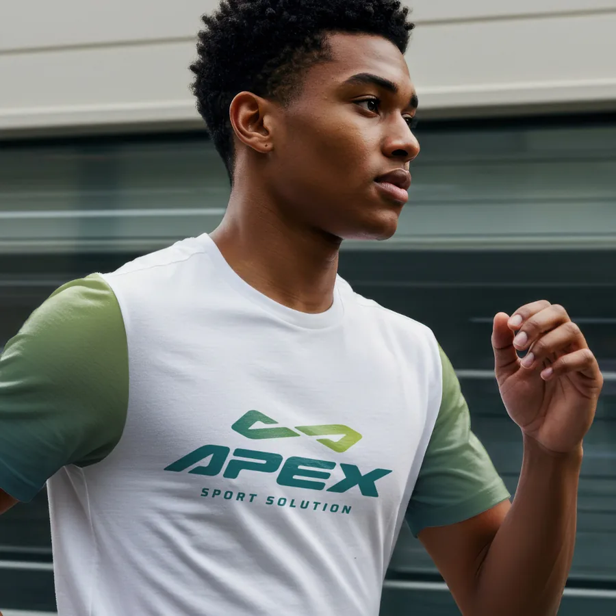
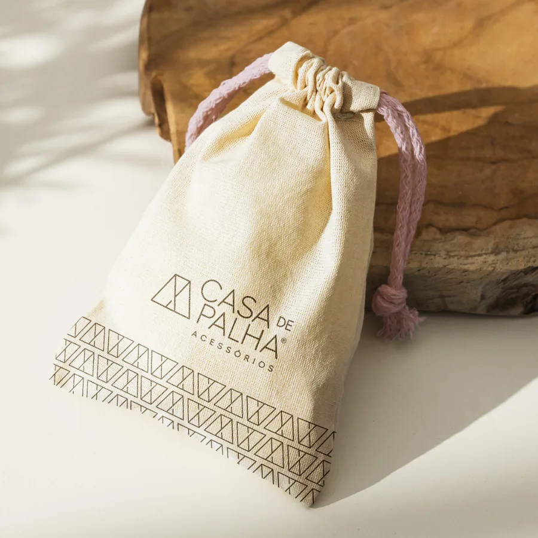
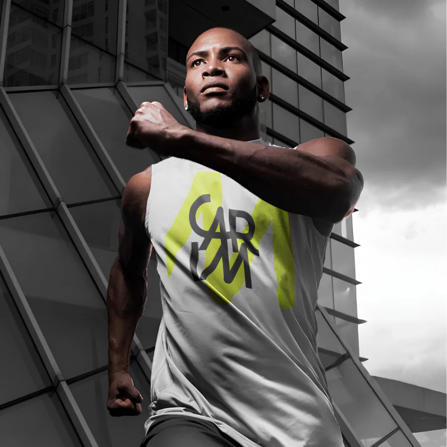
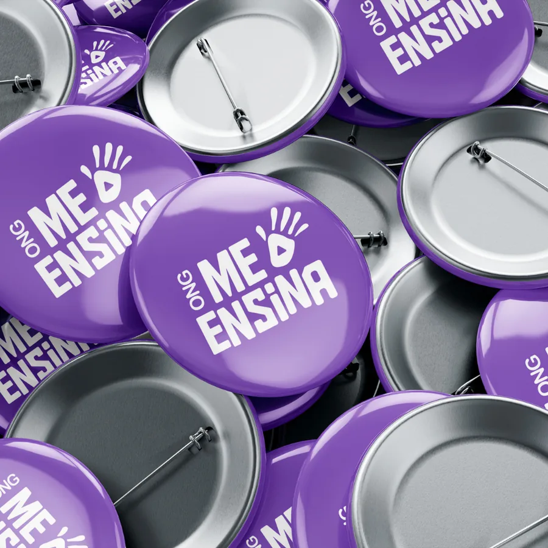
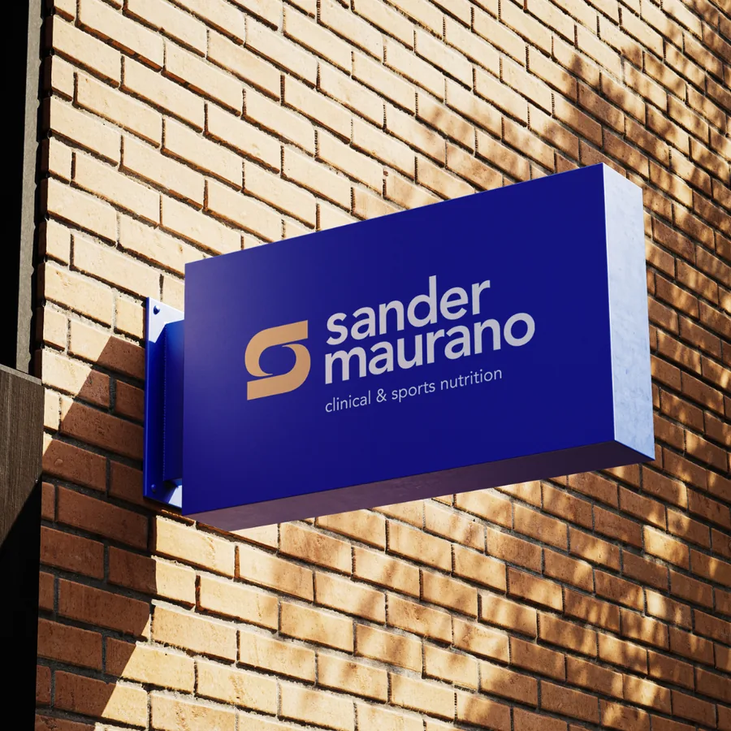

O MilkTest é genuíno, o mercado de leite A2 está crescendo, e a Dairy Tech tem o que ninguém mais tem. O que falta é uma infraestrutura de marketing que opere com a mesma inteligência do produto que vocês vendem.
Não um projeto pontual. Um sistema que funciona, que escala e que aprende.
Ver a proposta completaDiagnóstico
Antes de propor qualquer coisa, ouvimos com atenção. E o que ouvimos é um padrão que conhecemos bem.
O MilkTest é genuinamente inovador. O mercado de leite A2 está crescendo. Mas o marketing atual não está conseguindo capturar essa oportunidade com a velocidade e a consistência que o momento exige.
Campanhas que funcionam um mês e desaparecem no outro. Sem uma estrutura de testes contínuos, otimização de criativos e gestão estratégica de verba, o tráfego pago vira roleta, e a conta não fecha.
Quem produz o conteúdo e os criativos não tem acesso aos dados de performance. Quem gerencia o tráfego pago não orienta a criação. Sem integração, cada time trabalha no escuro, e os resultados refletem isso.
Na ausência de um sistema integrado, a pessoa de liderança acaba sendo a única que conecta a estratégia ao conteúdo, ao tráfego e aos resultados. Isso é caro, insustentável e tira foco do que realmente importa: crescer o negócio.
Qualquer troca de fornecedor, contratação ou reorganização interna pode derrubar o que estava funcionando. Um marketing que depende de pessoas específicas (e não de um sistema) é um marketing que vive em risco permanente.
A Solução
Não é uma agência. Não é um software. É um sistema operacional de marketing onde criação, performance e estratégia operam como um único motor, e as decisões ficam dentro do sistema, não nas pessoas.
Os dados de tráfego informam os criativos em tempo real. O que converte orienta o que se produz. Não há mais desconexão entre quem cria e quem vende.
As decisões táticas e estratégicas vivem no sistema, não em uma pessoa ou fornecedor específico. Mudanças futuras de equipe ou parceiros não quebram o que foi construído.
Com um sistema que se auto-coordena, você para de ser o elo entre as pontas e volta a ser a CEO, tomando decisões de negócio, não gerenciando planilhas de marketing.
Os 4 Pilares
Quatro frentes integradas, operando em sincronia. Cada uma alimenta as outras.
Pilar 01
Produção contínua de conteúdo educativo e de autoridade para os dois públicos da Dairy Tech, produtores rurais e laticínios, em todos os formatos relevantes.
Pilar 02
Criação de identidade visual consistente e produção acelerada de peças gráficas com ferramentas de IA supervisionadas por designers humanos.
Pilar 03
Gestão completa de campanhas no Meta Ads e Google Ads, com segmentação precisa para cada público e otimização contínua baseada em dados.
Pilar 04
Monitoramento em tempo real de toda a operação, com dashboards claros e relatórios que traduzem dados em decisões, sem enrolação.
A Metodologia
Um fluxo contínuo onde inteligência artificial e equipe humana trabalham em sincronia, semana após semana.
Um agente de IA monitora continuamente tendências do setor de leite A2, movimentos de concorrentes, perguntas frequentes de produtores rurais em fóruns e grupos, e oportunidades de pauta relevantes para a Dairy Tech. Esses insights alimentam toda a estratégia de conteúdo da semana.
Com base nos insights coletados e no calendário editorial, o agente de conteúdo gera rascunhos de posts, captions, scripts, e-mails e copy de anúncio. A linguagem é calibrada para cada público: o produtor rural que quer triagem de rebanho e o técnico do laticínio que precisa de certificação.
Em paralelo, o agente de design gera as peças visuais para cada conteúdo: feed, stories, criativos de anúncio, thumbnails. O fluxo de trabalho utiliza ferramentas de IA generativa supervisionadas por um designer humano que garante consistência de marca e qualidade visual.
Nenhum conteúdo é publicado sem passar pelo olhar humano. Nossa equipe revisa todo o material gerado: ajusta o tom, refina os detalhes técnicos sobre MilkTest e beta-caseína, e garante que a voz da Dairy Tech esteja presente em cada peça. Você aprova o que quiser antes de ir ao ar.
O conteúdo aprovado é publicado nos canais certos, nos horários ideais. As campanhas de tráfego pago são ativadas e monitoradas. O algoritmo dos agentes ajusta lances, pausa criativos de baixa performance e escala o que está funcionando, em tempo real.
O agente de análise processa os dados de desempenho de todas as frentes e retroalimenta o sistema. O que engajou vira mais conteúdo parecido. O criativo que converteu vira referência para os próximos. A cada ciclo, o sistema fica mais inteligente, e mais eficiente para a Dairy Tech.
Na Prática
É literalmente assim que o trabalho flui. IA e humanos passando o bastão, cada um fazendo o que faz de melhor, sem lacuna e sem sobreposição.
O Que Você Recebe
Clareza total sobre o que está sendo produzido e entregue em cada ciclo mensal.
Planejamento completo de conteúdo para todos os canais, com temas, formatos e datas de publicação.
Todo mêsConteúdo educativo, de produto e de prova social produzido com consistência semanal.
SemanalRoteiros desenvolvidos para vídeos educativos sobre leite A2, o MilkTest e o mercado.
MensalPeças visuais em todos os formatos para campanhas no Meta e Google, testadas e otimizadas.
ContínuoSetup, monitoramento e otimização diária de campanhas no Meta Ads e Google Ads.
DiárioVisão em tempo real de todos os indicadores: alcance, conversão, CAC e ROI consolidados.
Tempo realAnálise detalhada com o que funcionou, o que foi ajustado e os próximos movimentos.
Todo mêsAlinhamento estratégico com a equipe para revisar resultados e ajustar prioridades.
A cada 15 diasMonitoramento contínuo de tendências do setor A2, movimentos de concorrentes e oportunidades.
ContínuoPlano Enterprise
Esta proposta está dentro do Plano Enterprise da Tuliu, nosso nível mais completo de serviço, reservado a parceiros com quem construímos uma relação de longo prazo.
Você não fala com um atendente. Você fala com o Tom diretamente, sempre que precisar.
Enquanto trabalharmos juntos, a Tuliu não atende nenhum outro cliente no mercado de diagnóstico para leite A2.
Demandas urgentes são tratadas em horas, não em dias. O sistema se adapta à velocidade do seu negócio.
Nenhum template. Cada decisão é pensada especificamente para a Dairy Tech e o mercado de leite A2.
Mais de duas décadas dedicadas ao marketing de marcas que precisavam crescer de verdade. Tom já esteve na sala de decisão de nomes como Asics, Marfrig, Ecovias, SBT, Teletom, Pompom e Habib's. Marcas com públicos, desafios e escalas completamente diferentes entre si. Esse histórico é o que ele traz para cada cliente do plano Enterprise: a experiência de quem já navegou em mercados complexos e sabe que bom marketing é, antes de tudo, um problema de sistema.
Quem somos
A Tuliu constrói sistemas de marketing que operam como infraestrutura, não como projetos pontuais. Processos que escalam com o seu negócio, não que travam quando ele cresce.
Portfólio
Empresas de diferentes setores que confiam na Tuliu para construir e operar a sua infraestrutura digital. Clique em qualquer card para ver o que foi feito.

Ver caseAdapto
Infraestrutura digital do zero
Vital Brasil
Sistema operacional de marketing completo

Ver caseAJ Notícias
Portal de notícias de alto volume

Ver caseAttez
Tecnologia, domínio e hospedagem de alta velocidade

Ver caseB2B
Landing page e tráfego pago B2B

Ver caseApex
Infraestrutura digital potencializada por IA

Ver caseCasa de Palha
E-commerce completo com IA e rastreamento avançado

Ver caseCase Sport
Integrações de pagamento e infraestrutura digital
Jurisprudência Descomplicada
Tráfego pago, conteúdo e design com IA
Cria
Sistema operacional de marketing com agentes de IA

Ver caseMe Ensina
Infraestrutura digital, apps e manutenção contínua
Recebai
Infraestrutura digital e automação financeira

Ver caseSander Maurano
Landing pages, Google Ads e integrações com IA
Sooly
Web app para gestão de locações de bicicletas elétricas
Sparz
Conteúdo, tráfego pago e agente de code
O Caminho
Antes de qualquer inovação, o básico precisa estar de pé. Começamos pelo que dá resultado mais rápido: unificar conteúdo e performance, hoje em ilhas separadas, e transformar o tráfego pago em uma operação consistente, não em uma aposta de mês a mês.
Com essa fundação sólida, a inovação entra em camadas. Os agentes de IA, os loops de otimização e a orquestração completa do sistema vão sendo ligados aos poucos, sempre sobre uma base que já está funcionando.
O sistema completo, com todas as frentes operando em sincronia, leva cerca de três meses para ser implementado por inteiro. Por isso esta proposta vislumbra um futuro, mas é honesta sobre o caminho: ele é construído ao longo do tempo, etapa por etapa.
Unificar conteúdo e performance e estabilizar o tráfego pago. O básico bem feito, com resultado visível já nas primeiras semanas.
Os agentes de pesquisa e criação entram no fluxo. Começam os primeiros ciclos de otimização alimentados por dados reais da operação.
Orquestração total entre IA e equipe humana operando em sincronia. O futuro descrito nesta proposta, implementado e rodando.
Nenhuma promessa de virada da noite para o dia. Resultado desde o começo, sistema completo ao longo de três meses. É assim que se constrói algo que dura.
O Investimento
Três meses para construir o sistema completo, com resultado desde o primeiro. Dois valores, sem letras miúdas.
A fundação do sistema. Montamos a estrutura e, já no Mês 1, você começa a operar o mais urgente: tráfego pago rodando e conteúdo integrado à performance.
A gestão integrada rodando mês a mês: tráfego, conteúdo e otimização operando como um só motor, com o sistema evoluindo a cada ciclo.
A sua verba de mídia (hoje cerca de R$ 8.000/mês) é separada e continua 100% investida em anúncios, agora gerida pela gente. Nossa taxa não consome o seu orçamento de tráfego, ela faz esse orçamento render mais.
Escopo fechado de 3 meses, resultado desde as primeiras semanas. Bora tirar isso do papel e ligar o sistema.
Ou acesse tuliu.io para saber mais sobre o nosso trabalho.